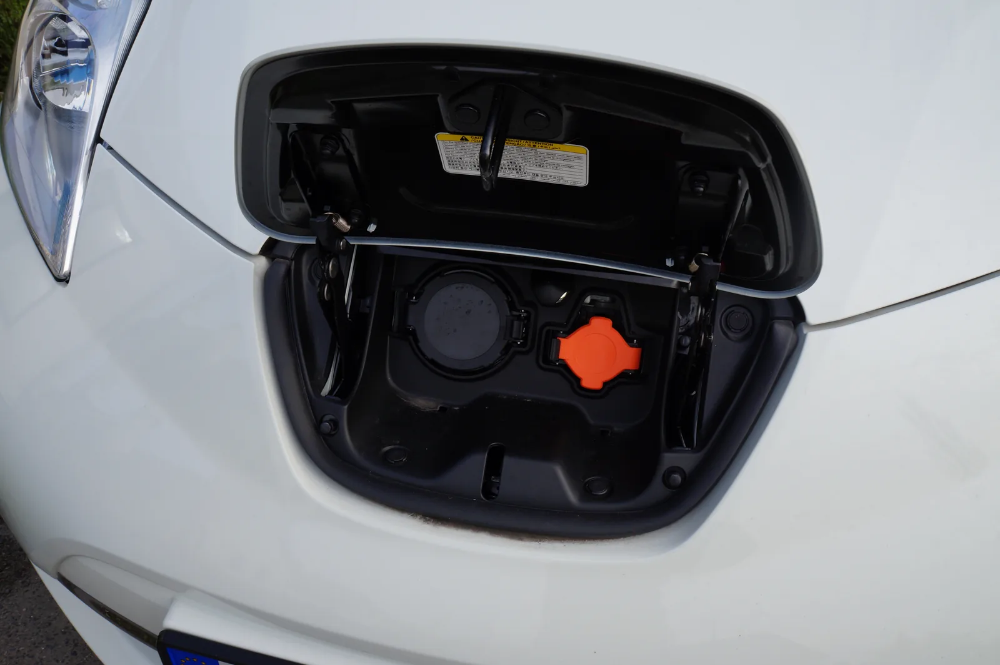
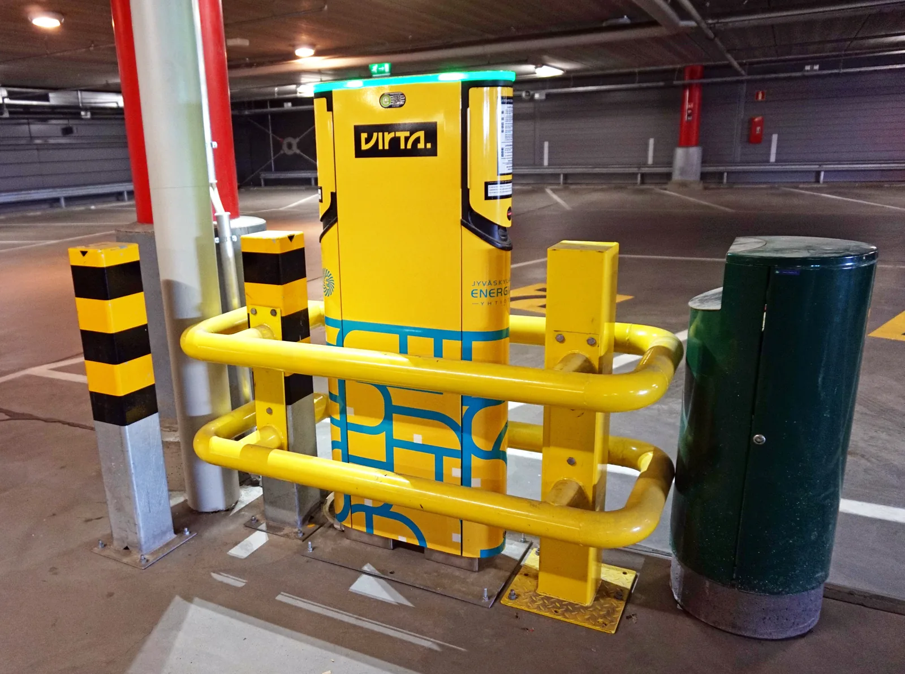

Soveltava luku: sähköauto ja kodin sähköjärjestelmä
Miksi sähköautoa ei kannata ladata jatkojohdolla tavallisesta pistorasiasta, ja riittävätkö kodin sähköt saunaan ja auton lataukseen yhtä aikaa?
Pohjatiedot
- Akun energia on nimellisjännite kertaa kapasiteetti, $W = UQ$, ja latauksen hyötysuhde jää alle $100\,\%$luku Akut ja latauspiiri
- Laitteen virta verkossa on $I = P : U$, ja energia on teho kertaa aika kilowattitunteinaluku Sähköenergia kotona
- Sulake suojaa johtoa ylikuumenemiselta ja vikavirtasuoja ihmistä vuotovirraltaluku Sähköturvallisuus kotona ja työssä
Pohdinta
Perhe tulee talvi-iltana kotiin. Auto kytketään talon seinällä olevaan latausasemaan, sauna lämpenee $9\,\text{kW}$:n kiukaalla ja keittiössä kiehuu vesi. Naapuri lataa omaa autoaan jatkojohdolla autotallin pistorasiasta. Aamulla molempien autojen pitäisi olla täynnä.
Riittävätkö kodin sähköt kaikkeen yhtä aikaa, kuinka kauan lataus kestää, ja miksi jatkojohto ei ole hyvä ratkaisu?
Valinnainen Kertaa: akun energia
Ennusta
Tee ennusteet ennen tutkimista 2 kysymystä
Ennuste 1: yksi vaihe vai kolme?
Ennuste 2: kiuas, keitin ja auto
Tutki
Kolme tapaa ladata
Akkuun pitää varastoida $40\,\text{kWh}$. Taulukossa on kolme tapaa ladata kotona. Vaihejännite on kaikissa $230\,\text{V}$. Pienellä teholla latauksen hyötysuhde on yleensä huonompi, koska auton laturin ja ohjauselektroniikan oma kulutus jakautuu pidemmälle ajalle.
| tapa | vaiheita | $I$ | $\eta$ |
|---|---|---|---|
| pistorasia | $1$ | $8{,}0\,\text{A}$ | $85\,\%$ |
| asema, yksi vaihe | $1$ | $16\,\text{A}$ | $90\,\%$ |
| asema, kolme vaihetta | $3$ | $16\,\text{A}$ | $90\,\%$ |
Laske jokaiselle tavalle latausteho $P$ ja latausaika $t$. Mahtuuko lataus yhteen yöhön, esimerkiksi kymmeneen tuntiin?
Esimerkkiaineisto.
Kuinka kauan lataus kestää tavallisesta pistorasiasta? Vastaa tunteina.
Vihje 1: ohjaava kysymys
Mikä on latausteho, kun jännite on $230\,\text{V}$ ja virta $8{,}0\,\text{A}$?
Vihje 2: mikä yhteys
Akkuun menee vain osuus $\eta$ verkosta otetusta energiasta, joten akkuun siirtyvä teho on $\eta P$.
Vihje 3: välivaihe
Näytä ratkaisu
Annettu
akkuun $W_\text{akku} = 40\,\text{kWh}$, jännite $U = 230\,\text{V}$, virta $I = 8{,}0\,\text{A}$, yksi vaihe, hyötysuhde $\eta = 85\,\%$
Kysytty
latausaika $t$ tunteina
Periaate
Pistorasia käyttää yhtä vaihetta, joten teho on $P = UI$. Teho on vakio, joten verkosta otettu energia on $Pt$, ja siitä akkuun varastoituu osuus $\eta$.
Kaava
$\eta U I t = W_\text{akku}$, joten $t = \dfrac{W_\text{akku}}{\eta U I}$
Muunnokset
$\eta = 0{,}85$
Sijoitus
Vastaus
$26\,\text{h}$
Kaksi merkitsevää numeroa kuten virrassa $8{,}0\,\text{A}$ ja hyötysuhteessa $85\,\%$.
Järkevyys
Akkuun menee noin $1{,}6\,\text{kW}$, ja $40\,\text{kWh} : 1{,}6\,\text{kW} = 25\,\text{h}$. Lataus kestää yli vuorokauden, eikä se mahdu yhteen yöhön. Yksivaiheisella asemalla sama vie noin $12\,\text{h}$ ja kolmivaiheisella noin $4\,\text{h}$.
Lisää tutkittavaa 2 tehtävää
Illan kuormat vaiheittain
Omakotitalon pääsulakkeet ovat $3 \cdot 25\,\text{A}$. Taulukossa on kolme laitetta, jotka ovat illalla päällä samaan aikaan, ja vaihejohtimet, joihin ne on kytketty. Kolmivaiheiset laitteet ottavat jokaisesta vaiheesta yhtä suuren virran. Vaihejännite on $230\,\text{V}$.
| laite | $P$ | vaiheet |
|---|---|---|
| kiuas | $9{,}0\,\text{kW}$ | $\text{L}_1$, $\text{L}_2$, $\text{L}_3$ |
| vedenkeitin | $2{,}0\,\text{kW}$ | $\text{L}_1$ |
| latausasema | $11\,\text{kW}$ | $\text{L}_1$, $\text{L}_2$, $\text{L}_3$ |
Laske ensin jokaisen laitteen virta yhdessä vaihejohtimessa. Laske sitten yhteen jokaisen vaiheen virrat ja vertaa niitä pääsulakkeen kokoon. Kuinka suuren virran latausasema saisi ottaa, kun kiuas on päällä?
Esimerkkiaineisto.
Kuinka suuri virta kulkee vaihejohtimessa $\text{L}_1$, kun kaikki kolme laitetta ovat päällä?
Vihje 1: ohjaava kysymys
Kolmivaiheinen laite ottaa jokaisesta vaiheesta virran $I = P : (3U)$, yksivaiheinen virran $I = P : U$.
Vihje 2: mikä yhteys
Kiuas ottaa $9000\,\text{W} : 690\,\text{V} \approx 13{,}0\,\text{A}$, latausasema $11\,000\,\text{W} : 690\,\text{V} \approx 16\,\text{A}$ ja keitin $2000\,\text{W} : 230\,\text{V} \approx 8{,}7\,\text{A}$.
Vihje 3: välivaihe
Vaiheen $\text{L}_1$ kautta kulkevat kaikkien kolmen laitteen virrat: $I_1 = 13{,}0\,\text{A} + 16\,\text{A} + 8{,}7\,\text{A}$.
Näytä ratkaisu
Annettu
kiuas $P_\text{k} = 9{,}0\,\text{kW}$ ja latausasema $P_\text{a} = 11\,\text{kW}$ kolmessa vaiheessa, vedenkeitin $P_\text{v} = 2{,}0\,\text{kW}$ vaiheessa $\text{L}_1$, $U = 230\,\text{V}$
Kysytty
vaihejohtimen $\text{L}_1$ virta $I_1$ ampeereina
Periaate
Kolmivaiheinen laite ottaa jokaisesta vaiheesta saman virran, joten sen teho on $P = 3UI$; yksivaiheisen laitteen teho on $P = UI$. Kaikki laitteet saavat virtansa saman vaihejohtimen kautta, joten virrat lasketaan yhteen (luku Kirchhoffin lait ja potentiaali virtapiirissä).
Kaava
Muunnokset
$P_\text{k} = 9000\,\text{W}$, $P_\text{a} = 11\,000\,\text{W}$ ja $P_\text{v} = 2000\,\text{W}$; $3U = 690\,\text{V}$
Sijoitus
Vastaus
$38\,\text{A}$
Kaksi merkitsevää numeroa kuten tehoissa $9{,}0\,\text{kW}$ ja $11\,\text{kW}$.
Järkevyys
Kiuas ja asema ottavat yhdessä $20\,\text{kW}$ kolmesta vaiheesta, noin $6{,}7\,\text{kW}$ vaihetta kohti eli noin $29\,\text{A}$, ja keitin lisää noin $9\,\text{A}$. Virta on noin puolitoistakertainen pääsulakkeen $25\,\text{A}$:iin verrattuna, joten ilman kuormanhallintaa sulake voisi palaa.
Johtopäätös: mitä kotilataus vaatii?
Kirjoita laskujesi perusteella: millä tavalla auto kannattaa ladata kotona, jotta lataus mahtuu yöhön? Mitä pääsulakkeille tapahtuu, jos auto latautuu täydellä teholla saunan lämmetessä, ja miten ongelma ratkaistaan?
Mallivastaus
Pistorasiasta virralla $8\,\text{A}$ teho on vain noin $1{,}8\,\text{kW}$, ja $40\,\text{kWh}$ vie häviöineen noin $26\,\text{h}$, joten se ei mahdu yöhön. Yksivaiheinen $16\,\text{A}$:n asema lataa noin $3{,}7\,\text{kW}$:n teholla noin $12\,\text{h}$, kolmivaiheinen kolminkertaisella teholla noin $4\,\text{h}$. Kun kiuas ($13{,}0\,\text{A}$ vaihetta kohti) ja asema ($16\,\text{A}$ vaihetta kohti) ovat päällä yhtä aikaa, jokaisessa vaiheessa kulkee $29{,}0\,\text{A}$ ja keittimen vaiheessa $37{,}7\,\text{A}$, yli pääsulakkeen $25\,\text{A}$:n. Pitkään jatkuessa pääsulake voi palaa. Kuormanhallinta pienentää latausvirtaa noin $12\,\text{A}$:iin saunan ajaksi tai keskeyttää latauksen hetkeksi. Luvut ovat keksityn esimerkkiaineiston laskettuja arvoja.
Arvioi oma vastauksesi
Rastita kohdat, jotka omassa vastauksessasi jo on.
Kertaa asia teoriasta ja harjoittele tehtävillä.
Teoria
Ydinajatus
Akku, teho ja latausaika
Sähköauton akku on suuri litiumioniakku (luku Akut ja latauspiiri). Tässä luvussa käytetään esimerkkiautoa, jonka akun nimellisjännite on $400\,\text{V}$ ja kapasiteetti $160\,\text{Ah}$. Akun energia on silloin $W = UQ = 400\,\text{V} \cdot 160\,\text{Ah} = 64\,\text{kWh}$, ja se riittää noin $350\,\text{km}$:n ajoon, kun auto käyttää $18\,\text{kWh}$ sadalla kilometrillä. Akkuun mahtuu siis yhtä paljon energiaa kuin $6\,\text{kW}$:n kiuas käyttää yli kymmenessä tunnissa.
Latausaika riippuu siitä, kuinka paljon energiaa akkuun pitää siirtää ja kuinka suurella teholla se tehdään. Latauksessa osa verkosta otetusta energiasta ei päädy akkuun, vaan muuttuu auton laturin, johtojen ja akun sisäenergiaksi, joka siirtyy lämpönä ympäristöön. Kotilatauksen hyötysuhde on tyypillisesti noin $80\text{–}95\,\%$, ja se jää aina alle $100\,\%$. Verkosta on siksi otettava enemmän energiaa kuin akkuun varastoituu.

Yksi vaihe vai kolme
Suomalaiseen omakotitaloon tulee yleensä kolmivaihesähkö: kolme vaihejohdinta $\text{L}_1$, $\text{L}_2$ ja $\text{L}_3$ sekä nollajohdin $\text{N}$. Jokaisen vaihejohtimen ja nollajohtimen välillä on jännite $230\,\text{V}$. Tavallinen pistorasia ja vedenkeitin käyttävät yhtä vaihetta, kiuas ja latausasema yleensä kaikkia kolmea. Kun laite ottaa jokaisesta vaihejohtimesta saman virran $I$, jokainen vaihe siirtää tehon $UI$, ja kokonaisteho on kolminkertainen. Vaihejohtimien välinen jännite on $400\,\text{V}$, mutta sitä ei tässä tarvita.
Laitteen virta saadaan tehosta kuten luvussa Sähköenergia kotona: yhdessä vaiheessa $I = P : U$. Tavallisesta pistorasiasta ladattaessa latauskaapeli rajoittaa virran yleensä noin $8\,\text{A}$:iin, jolloin teho on $230\,\text{V} \cdot 8\,\text{A} \approx 1{,}8\,\text{kW}$. Yksivaiheinen latausasema, jonka virta on $16\,\text{A}$, lataa teholla noin $3{,}7\,\text{kW}$, ja kolmivaiheinen samalla virralla kolminkertaisella teholla, noin $11\,\text{kW}$. Sama $40\,\text{kWh}$:n lataus kestää pistorasiasta yli vuorokauden, kolmivaiheisella asemalla noin neljä tuntia.
Kodin sähköjärjestelmä
Sähköverkosta tuleva kaapeli kulkee mittarin kautta sähkökeskukseen. Keskuksessa ovat ensin pääsulakkeet, yksi kussakin vaihejohtimessa, esimerkiksi $3 \cdot 25\,\text{A}$. Niiden jälkeen virta jakautuu ryhmiin: jokaisella ryhmällä on oma johtonsa ja oma sulakkeensa tai johdonsuojakatkaisijansa, esimerkiksi $10\,\text{A}$ tai $16\,\text{A}$. Sulake suojaa johtoa: se katkaisee virran, ennen kuin virta lämmittää johtoa vaarallisesti (luku Sähköturvallisuus kotona ja työssä). Siksi sulakkeen koko valitaan johdon poikkipinta-alan mukaan, eikä tilalle saa vaihtaa suurempaa.

Miksi latausasemalla on oma ryhmä ja vikavirtasuoja
Auton lataus on kodin pisin suuri kuorma: virta voi kulkea tuntikausia lähes ryhmän sulakkeen suuruisena. Jos samassa ryhmässä olisi muitakin pistorasioita, johto ja pistorasia olisivat tuntikausia lähes nimellisvirralla, pistorasian kosketuskohdat lämpenisivät ja muut kuormat voisivat katkaista latauksen. Siksi sähköasennusstandardi edellyttää, että jokaisella latauspisteellä on oma ryhmä, joka on mitoitettu sen virralle. Latauspisteellä on myös oma vikavirtasuoja: se katkaisee virran, jos osa siitä vuotaa muuta reittiä, esimerkiksi märän kaapelin ja ihmisen kautta maahan, ja ero on yli $30\,\text{mA}$. Ulkona kaapeli kastuu, jäätyy ja jää joskus renkaan alle, joten eristeen vaurio on todennäköisempi kuin sisällä. Ulos asennetun aseman kotelolla on kotelointiluokka (IP-luokka), esimerkiksi IP54, joka kertoo, että se kestää pölyä ja roiskevettä.
Pääsulake ja samanaikaiset kuormat
Pääsulakkeet rajoittavat koko talon virtaa. Kun pääsulakkeet ovat $3 \cdot 25\,\text{A}$, talo voi ottaa verkosta enintään noin $3 \cdot 230\,\text{V} \cdot 25\,\text{A} \approx 17\,\text{kW}$, ja silloinkin vain, jos kuorma jakautuu tasan kolmeen vaiheeseen. Ratkaisevaa on jokaisen vaihejohtimen oma virta. Kuvassa samaan aikaan ovat päällä $9{,}0\,\text{kW}$:n kiuas, joka ottaa jokaisesta vaiheesta $13{,}0\,\text{A}$, $11\,\text{kW}$:n latausasema, joka ottaa jokaisesta vaiheesta $16\,\text{A}$, ja vaiheessa $\text{L}_1$ vedenkeitin, $8{,}7\,\text{A}$. Vaiheen $\text{L}_1$ virta on $37{,}7\,\text{A}$ ja muiden $29{,}0\,\text{A}$.
Pääsulake ei pala heti pienestä ylikuormasta, mutta jos ylikuorma on riittävän suuri ja jatkuu pitkään, se voi palaa, ja koko talo pimenee. Siksi latausasemassa on usein kuormanhallinta: se mittaa pääsulakkeiden virtaa ja pienentää latausvirtaa, kun muut laitteet ovat päällä. Kun kiuas ottaa $13{,}0\,\text{A}$, autolle jää jokaisessa vaiheessa noin $12\,\text{A}$ eli noin $8{,}3\,\text{kW}$. Jos vedenkeitinkin kytketään, vaiheeseen $\text{L}_1$ jää vain noin $3\,\text{A}$, joten kuormanhallinta keskeyttää latauksen hetkeksi.
Johdon ja liitoksen lämpeneminen
Johto on vastus, jonka läpi kulkee sama virta kuin laitteen. Virta kulkee laitteelle vaihejohdinta ja palaa nollajohdinta pitkin, joten kuparia on kaksi kertaa johdon pituus. Joulen lain mukaan johtoon tuleva teho on $RI^2$ (luku Sähköteho ja vastuksen lämpeneminen): kun virta kaksinkertaistuu, lämpenemisteho nelinkertaistuu. Kelalla olevan $25\,\text{m}$:n jatkojohdon, jonka johtimet ovat $1{,}5\,\text{mm}^2$, resistanssi on noin $0{,}57\,\Omega$, ja virralla $10\,\text{A}$ siihen tulee noin $57\,\text{W}$. Kelalta siirtyy energiaa lämpönä ympäristöön huonosti, joten kela kuumenee, ja kuumeneminen vanhentaa eristettä. Eristeen läpilyöntilujuus voi silloin heiketä, ja eriste voi pettää.
Vielä vaarallisempi on löystynyt tai hapettunut liitos. Vanhan pistorasian kosketusresistanssi voi olla esimerkiksi $0{,}10\,\Omega$, jolloin virralla $10\,\text{A}$ liitokseen tulee teho $10\,\text{W}$. Se keskittyy herneen kokoiseen kohtaan, ja lataus kestää tunteja. Siksi säännölliseen lataamiseen suositellaan latausasemaa, ja jatkojohtoa ei käytetä.
Lukuarvojen lähteet
Luvun lukuarvot ovat tyypillisiä esimerkkiarvoja, eivät tietyn auton tai talon mittauksia. Verkkojännite $230\,\text{V}$ ja vakiovirrat $10\,\text{A}$, $16\,\text{A}$ ja $25\,\text{A}$ ovat Suomen sähköverkon ja kotien asennusten tavallisia arvoja. Akun koko $64\,\text{kWh}$ ja kulutus $18\,\text{kWh}$ sadalla kilometrillä ovat pienen ja keskikokoisen sähköauton suuruusluokkaa. Hyötysuhde $80\text{–}95\,\%$ on arvio. Vaatimus latauspisteen omasta ryhmästä ja vikavirtasuojasta on sähköasennusstandardista SFS 6000-7-722, ja Tukes ohjeistaa sähköauton latauksesta kotona. Kuparin resistiivisyys on luvun Resistanssi ja Ohmin laki taulukosta.
Latausaika, latausteho ja johdon lämpeneminen
Latauksen hyötysuhde kertoo, kuinka suuri osa verkosta otetusta energiasta varastoituu akkuun:
$$\eta = \frac{W_\text{akku}}{W_\text{verkko}}$$
missä $\eta$ on hyötysuhde, $W_\text{akku}$ akkuun varastoitunut energia ($\text{kWh}$) ja $W_\text{verkko}$ verkosta otettu energia ($\text{kWh}$).
Kun latausteho $P$ on vakio, verkosta otettu energia on $W_\text{verkko} = Pt$ (luku Sähköenergia kotona). Latausaika on siksi
$$t = \frac{W_\text{akku}}{\eta P}$$
missä $t$ on latausaika ($\text{h}$) ja $P$ verkosta otettu teho ($\text{kW}$). Kuvan mallissa teho pysyy vakiona, kunnes akku on noin $90\,\%$:n varaustasossa. Sen jälkeen teho pienenee, koska akun lähdejännite kasvaa ja ohjauspiiri pienentää virtaa (luku Akut ja latauspiiri). Verkosta otettu energia on käyrän alle jäävä pinta-ala. Kaava sopii siis latauksen tasaiseen osaan, esimerkiksi varaustasosta $20\,\%$ tasoon $80\,\%$.
Luvussa oletetaan, että latauslaitteen virta ja jännite ovat samanvaiheiset eli tehokerroin on likimain yksi. Silloin yksivaiheisen laitteen teho on $P = UI$. Tasaisesti kuormitetussa kolmivaihejärjestelmässä, jossa laite ottaa jokaisesta vaihejohtimesta saman virran, kokonaisteho on tässä mallissa
$$P = 3UI$$
missä $U = 230\,\text{V}$ on vaihejohtimen ja nollajohtimen välinen jännite ja $I$ yhden vaihejohtimen virta ($\text{A}$).
Johtoon tuleva lämpenemisteho saadaan Joulen laista ja johtimen resistanssista $R = \rho l : A$ (luku Resistanssi ja Ohmin laki), kun kuparin pituudeksi otetaan meno- ja paluujohdin yhteensä:
$$P_\text{johto} = \rho \frac{2l}{A} I^2$$
missä $P_\text{johto}$ on johtoon tuleva teho ($\text{W}$), $\rho$ kuparin resistiivisyys $1{,}7 \cdot 10^{-8}\,\Omega\cdot\text{m}$, $l$ johdon pituus ($\text{m}$), $A$ yhden johtimen poikkipinta-ala ($\text{m}^2$) ja $I$ virta ($\text{A}$).
Latauksen hinta lasketaan verkosta otetusta energiasta, ei akkuun varastoituneesta:
$$K = a W_\text{verkko}$$
missä $K$ on kustannus ($\text{€}$) ja $a$ energian ja siirron hinta yhteensä ($\text{€/kWh}$). Sadan kilometrin ajo, $18\,\text{kWh}$ akusta, vaatii hyötysuhteella $90\,\%$ verkosta $20\,\text{kWh}$, ja hinnalla $15\,\text{snt/kWh}$ se maksaa noin $3{,}0\,\text{€}$.
Yleinen virhekäsitys
Moni ajattelee, että kun sulake palaa toistuvasti, sen tilalle voi vaihtaa suuremman. Sulake ei kuitenkaan suojaa laitetta vaan johtoa: sen koko on valittu niin, että johto ei kuumene vaarallisesti. Suurempi sulake päästää johtoon virran, joka lämmittää sitä enemmän kuin johto kestää, ja eriste voi sulaa tai syttyä. Oikea ratkaisu on oma ryhmä, kuten latausasemalle, tai kuormien vuorottelu.
Toinen yleinen virhe on olettaa, että $64\,\text{kWh}$:n akun täyttäminen vie verkosta $64\,\text{kWh}$. Häviöiden vuoksi verkosta otetaan enemmän: akkuun menevä energia jaetaan hyötysuhteella, ei kerrota sillä.
Tiivistelmä
- Latausaika on akkuun siirrettävä energia jaettuna hyötysuhteen ja tehon tulolla, $t = W_\text{akku} : (\eta P)$. Hyötysuhde jää alle $100\,\%$, koska latauksessa on aina häviöitä, joten verkosta otetaan enemmän energiaa kuin akkuun varastoituu, ja hinta maksetaan verkosta otetusta energiasta.
- Yksivaiheisen latauksen teho on $P = UI$, kolmivaiheisen $P = 3UI$, kun jokaisessa vaihejohtimessa on sama virta. Samalla $16\,\text{A}$:n virralla kolmivaiheinen asema lataa kolme kertaa nopeammin.
- Pääsulakkeet rajoittavat jokaisen vaihejohtimen virtaa. Saman vaiheen virrat lasketaan yhteen, ja kuormanhallinta pienentää latausvirtaa, kun kiuas tai muut laitteet ovat päällä.
- Latausasemalla on oma ryhmä ja oma vikavirtasuoja: lataus on pitkä suuri kuorma, ja ulkona kaapelin eriste voi vaurioitua.
- Johdon lämpenemisteho on $RI^2$: kaksinkertainen virta nelinkertaistaa sen. Kelattu jatkojohto ja löystynyt liitos kuumenevat: kelalta siirtyy huonosti lämpöä ympäristöön, ja löystyneessä liitoksessa lämpenemisteho keskittyy pieneen kohtaan.
Valinnainen Palaa ennusteisiisi
Vertaa ennusteitasi laskemiisi tehoihin ja virtoihin. Palaa sitten alun kysymykseen: miksi naapurin jatkojohto ei ole hyvä ratkaisu, vaikka se toimii?
Muuttaisitko ennustettasi?
Esimerkit
Esimerkki 1: Sähköauton lataus
Esimerkkiauton akun energia on $64\,\text{kWh}$. Akku ladataan yöllä varaustasosta $20\,\%$ tasoon $80\,\%$ kolmivaiheisella latausasemalla, joka ottaa jokaisesta vaihejohtimesta virran $16\,\text{A}$. Vaihejännite on $230\,\text{V}$, latauksen hyötysuhde $90\,\%$ ja teho pysyy koko latauksen ajan vakiona. Kuinka kauan lataus kestää, ja paljonko se maksaa, kun sähkö maksaa siirtoineen $15\,\text{snt/kWh}$?
Vaihe 1/7
Tunnetut ja kysytty. Akun energia $64\,\text{kWh}$, varaustaso $20\,\% \to 80\,\%$, $I = 16\,\text{A}$ kussakin kolmessa vaiheessa, $U = 230\,\text{V}$, $\eta = 0{,}90$, $a = 15\,\text{snt/kWh}$. Kysytään latausaikaa $t$ ja kustannusta $K$.
Vaihe 2/7
Periaate. Akkuun pitää siirtää $60\,\%$ sen energiasta. Asema ottaa jokaisesta kolmesta vaiheesta saman virran, joten sen teho on kolme kertaa yhden vaiheen teho. Häviöiden vuoksi verkosta otetaan akkuun menevä energia jaettuna hyötysuhteella, ja hinta maksetaan verkosta otetusta energiasta.
Vaihe 3/7
Kaava ratkaistuna. $$\begin{aligned} P &= 3UI \\ t &= \frac{W_\text{akku}}{\eta P} \\ K &= \frac{a W_\text{akku}}{\eta} \end{aligned}$$
Vaihe 4/7
Yksikkömuunnokset.
Teho muunnetaan kilowateiksi, jotta aika saadaan tunteina.
Vaihe 5/7
Sijoitus. $$\begin{aligned} P &= 3UI \\ \phantom{P} &= 3 \cdot 230\,\text{V} \cdot 16\,\text{A} \\ \phantom{P} &= 11\,040\,\text{W} = 11{,}04\,\text{kW} \\ t &= \frac{W_\text{akku}}{\eta P} \\ \phantom{t} &= \frac{38{,}4\,\text{kWh}}{0{,}90 \cdot 11{,}04\,\text{kW}} \\ \phantom{t} &\approx 3{,}86\,\text{h} \\ K &= \frac{a W_\text{akku}}{\eta} \\ \phantom{K} &= \frac{0{,}15\,\text{€/kWh} \cdot 38{,}4\,\text{kWh}}{0{,}90} \\ \phantom{K} &= 6{,}40\,\text{€} \end{aligned}$$
Vaihe 6/7
Tulos. Lataus kestää noin $3{,}9\,\text{h}$ ja maksaa noin $6{,}4\,\text{€}$. Verkosta otetaan $38{,}4\,\text{kWh} : 0{,}90 \approx 42{,}7\,\text{kWh}$. Tulokset ilmoitetaan kahdella merkitsevällä numerolla kuten hyötysuhde $0{,}90$ ja hinta $15\,\text{snt/kWh}$.
Vaihe 7/7
Järkevyys. Arvio: noin $40\,\text{kWh}$ noin $10\,\text{kW}$:n teholla kestää noin $4\,\text{h}$. Ilman häviöitä lataus kestäisi $38{,}4\,\text{kWh} : 11{,}04\,\text{kW} \approx 3{,}5\,\text{h}$, joten häviöt pidentävät sitä, kuten pitääkin. Hinta vastaa noin $210\,\text{km}$:n ajoa, noin $3\,\text{€}$ sadalta kilometriltä, ja lataus mahtuu hyvin yhteen yöhön.
Esimerkki 2: Etsi virhe
Esimerkki 3: Sovella uuteen tilanteeseen
Yksivaiheinen latausasema on kytketty sähkökeskukseen $25\,\text{m}$ pitkällä kaapelilla, jonka kuparijohtimien poikkipinta-ala on $2{,}5\,\text{mm}^2$. Latausvirta on $16\,\text{A}$. Virta kulkee asemalle vaihejohdinta ja palaa nollajohdinta pitkin. Kuparin resistiivisyys on $1{,}7 \cdot 10^{-8}\,\Omega\cdot\text{m}$.
Kuinka suuri teho kaapeliin tulee? Vastaa watteina.
Vihje 1: ohjaava kysymys
Kaapelin kuparijohtimet ovat vastus. Kuinka pitkä kuparimatka virralla on, kun se kulkee asemalle ja takaisin?
Vihje 2: mikä yhteys
$R = \rho \dfrac{2l}{A}$, missä $A = 2{,}5 \cdot 10^{-6}\,\text{m}^2$.
Vihje 3: välivaihe
$R = 0{,}34\,\Omega$, ja Joulen lain mukaan $P = RI^2$.
Näytä ratkaisu
Annettu
kaapelin pituus $l = 25\,\text{m}$, poikkipinta-ala $A = 2{,}5\,\text{mm}^2$, virta $I = 16\,\text{A}$, kuparin resistiivisyys $\rho = 1{,}7 \cdot 10^{-8}\,\Omega\cdot\text{m}$
Kysytty
kaapeliin tuleva lämpenemisteho $P_\text{johto}$ watteina
Periaate
Kaapelin kuparijohtimet ovat vastus, jonka läpi kulkee latausvirta. Virta kulkee meno- ja paluujohtimessa, joten kuparin pituus on $2l$. Joulen lain mukaan vastukseen tuleva teho on $RI^2$, ja se muuttuu kaapelin sisäenergiaksi, joka siirtyy lämpönä ympäristöön.
Kaava
$P_\text{johto} = RI^2$ ja $R = \rho \dfrac{2l}{A}$, joten
Muunnokset
Sijoitus
Vastaus
$87\,\text{W}$
Kaksi merkitsevää numeroa kuten resistiivisyydessä $1{,}7 \cdot 10^{-8}\,\Omega\cdot\text{m}$ ja poikkipinta-alassa $2{,}5\,\text{mm}^2$.
Järkevyys
Teho on $87\,\text{W} : 3680\,\text{W} \approx 2{,}4\,\%$ latausaseman tehosta, ja se jakautuu $25\,\text{m}$:n matkalle, noin $3{,}5\,\text{W}$ metriä kohti, joten kiinteä kaapeli lämpenee vain vähän. Puolella virralla teho olisi neljäsosa, noin $22\,\text{W}$.
Kertaa luvun käsitteet
Jos valitset Kertaa myöhemmin, kortti siirtyy kertauspakkaasi.
- Kolmivaihesähkö
- Sähkönsyöttö, jossa on kolme vaihejohdinta ja nollajohdin; tasaisella kuormalla teho on kolminkertainen yhteen vaiheeseen verrattuna.$$P = 3UI$$
- Pääsulake
- Sähkökeskuksen sulake kussakin vaihejohtimessa, joka rajoittaa koko talon kunkin vaiheen virtaa.
- Latausaika
- Aika, jonka akun lataaminen vakioteholla kestää, kun latauksen häviöt otetaan huomioon hyötysuhteella.$$t = \dfrac{W_\text{akku}}{\eta P}$$
Tehtävät
Taso 1 · perusharjoitus 8 tehtävää
Yksi kaava tai yksi päättelyaskel. Ydintehtävät ensin, loput lisäharjoitusta.
- Tehtävä 16-1
Sähköauton akun energia on täyteen ladattuna $64\,\text{kWh}$. Kuinka paljon energiaa akkuun pitää varastoida, kun se ladataan varaustasosta $15\,\%$ tasoon $80\,\%$? Vastaa kilowattitunteina.
Vastaus
$42\,\text{kWh}$
Näytä ratkaisu
Annettu
akun energia täyteen ladattuna $W = 64\,\text{kWh}$, varaustaso nousee $15\,\%$:sta $80\,\%$:iin
Kysytty
akkuun varastoitava energia $W_\text{akku}$ kilowattitunteina
Periaate
Varaustaso kertoo, kuinka suuri osa akun täydestä energiasta siihen on varastoitunut. Akkuun pitää siis siirtää varaustasojen erotuksen osuus täydestä energiasta.
Kaava
$W_\text{akku} = (s_2 - s_1) W$, missä $s_1$ ja $s_2$ ovat varaustasot desimaalilukuina
Muunnokset
$s_1 = 15\,\% = 0{,}15$ ja $s_2 = 80\,\% = 0{,}80$
Sijoitus
$W_\text{akku}$$= (0{,}80 - 0{,}15) \cdot 64\,\text{kWh}$$= 0{,}65 \cdot 64\,\text{kWh}$$= 41{,}6\,\text{kWh}$Vastaus
$42\,\text{kWh}$
Kaksi merkitsevää numeroa kuten akun energiassa $64\,\text{kWh}$.
Järkevyys
Kaksi kolmasosaa akusta on noin $\tfrac{2}{3} \cdot 64\,\text{kWh} \approx 43\,\text{kWh}$, ja $65\,\%$ on vähän alle kahden kolmasosan. Tulos on pienempi kuin koko akku, kuten pitää.
- Tehtävä 16-2
Sähköautoa ladataan mökillä hyväkuntoisesta tavallisesta pistorasiasta auton latauskaapelilla, joka rajoittaa latausvirran $8{,}0\,\text{A}$:iin. Jännite on $230\,\text{V}$. Kuinka suuri on verkosta otettu latausteho? Vastaa kilowatteina.
Vastaus
$1{,}8\,\text{kW}$
Näytä ratkaisu
Annettu
jännite $U = 230\,\text{V}$, latausvirta $I = 8{,}0\,\text{A}$
Kysytty
verkosta otettu latausteho $P$ kilowatteina
Periaate
Pistorasia käyttää yhtä vaihetta, joten teho on jännite kertaa virta kuten minkä tahansa yksivaiheisen laitteen teho. Verkkojännite $230\,\text{V}$ on vaihtojännitteen tehollinen arvo. Latauslaitteen tehokerroin oletetaan likimain yhdeksi, joten teho lasketaan kuten tasajännitteellä.
Kaava
$P = UI$
Muunnokset
Tulos watteina muunnetaan kilowateiksi: $1\,\text{W} = 0{,}001\,\text{kW}$.
Sijoitus
$P$$= 230\,\text{V} \cdot 8{,}0\,\text{A}$$= 1840\,\text{W}$$\approx 1{,}8\,\text{kW}$Vastaus
$1{,}8\,\text{kW}$
Kaksi merkitsevää numeroa kuten virrassa $8{,}0\,\text{A}$.
Järkevyys
Teho on samaa suuruusluokkaa kuin vedenkeittimen teho, mutta lataus kestää tunteja. $40\,\text{kWh}$:n lataukseen kuluisi tällä teholla yli $21\,\text{h}$, joten pistorasialataus sopii lähinnä satunnaiseen käyttöön, kuten mökille. Tavallisesta pistorasiasta ladataan enintään $8\,\text{A}$:n virralla, ja pistorasian on oltava hyväkuntoinen, koska pitkä suuri virta lämmittää liitoksia.
- Tehtävä 16-3
Kolmivaiheisen latausaseman teho on $11\,\text{kW}$, ja se ottaa jokaisesta kolmesta vaihejohtimesta yhtä suuren virran. Vaihejännite on $230\,\text{V}$. Kuinka suuri virta kulkee yhdessä vaihejohtimessa?
Vastaus
$16\,\text{A}$
Näytä ratkaisu
Annettu
teho $P = 11\,\text{kW}$, kolme vaihetta, vaihejännite $U = 230\,\text{V}$
Kysytty
yhden vaihejohtimen virta $I$ ampeereina
Periaate
Asema ottaa jokaisesta kolmesta vaihejohtimesta saman virran, ja jokainen vaihe siirtää tehon $UI$. Kokonaisteho on siis kolme kertaa yhden vaiheen teho.
Kaava
$P = 3UI$, josta $I = \dfrac{P}{3U}$
Muunnokset
$P = 11\,\text{kW} = 11\,000\,\text{W}$
Sijoitus
$I$$= \dfrac{11\,000\,\text{W}}{3 \cdot 230\,\text{V}}$$= \dfrac{11\,000\,\text{W}}{690\,\text{V}}$$= 15{,}94\,\text{A}$Vastaus
$16\,\text{A}$
Kaksi merkitsevää numeroa kuten tehossa $11\,\text{kW}$.
Järkevyys
Jos koko teho kulkisi yhdessä vaiheessa, virta olisi $11\,000\,\text{W} : 230\,\text{V} \approx 48\,\text{A}$; kolmeen vaiheeseen jaettuna se on kolmasosa siitä. $16\,\text{A}$ on tavallinen latausaseman ryhmän sulakkeen koko.
- Tehtävä 16-4
Sähköauton lataus otti verkosta $45\,\text{kWh}$ energiaa. Sähkö maksaa siirtoineen $14\,\text{snt/kWh}$. Kuinka paljon lataus maksoi? Vastaa euroina.
Vastaus
$6{,}3\,\text{€}$
Näytä ratkaisu
Annettu
verkosta otettu energia $W_\text{verkko} = 45\,\text{kWh}$, hinta $a = 14\,\text{snt/kWh}$
Kysytty
kustannus $K$ euroina
Periaate
Lataus maksetaan verkosta otetusta energiasta, ja jokainen kilowattitunti maksaa saman hinnan. Kustannus on siis hinta kertaa energia.
Kaava
$K = a W_\text{verkko}$
Muunnokset
$a$$= 14\,\text{snt/kWh}$$= 14 \cdot 0{,}01\,\text{€/kWh}$$= 0{,}14\,\text{€/kWh}$Sijoitus
$K$$= 0{,}14\,\text{€/kWh} \cdot 45\,\text{kWh}$$= 6{,}30\,\text{€}$Vastaus
$6{,}3\,\text{€}$
Kaksi merkitsevää numeroa kuten energiassa $45\,\text{kWh}$ ja hinnassa $14\,\text{snt/kWh}$.
Järkevyys
Sentteinä $45 \cdot 14\,\text{snt} = 630\,\text{snt}$. Kymmenellä sentillä hinta olisi $4{,}50\,\text{€}$ ja viidellätoista $6{,}75\,\text{€}$, joten tulos on niiden välissä lähellä jälkimmäistä.
- Tehtävä 16-5
Latausaseman mittarin mukaan lataus otti verkosta $50\,\text{kWh}$, ja auton mukaan akkuun varastoitui $44\,\text{kWh}$. Mikä oli latauksen hyötysuhde? Vastaa prosentteina.
Vastaus
$88\,\%$
Näytä ratkaisu
Annettu
verkosta otettu energia $W_\text{verkko} = 50\,\text{kWh}$, akkuun varastoitunut energia $W_\text{akku} = 44\,\text{kWh}$
Kysytty
latauksen hyötysuhde $\eta$ prosentteina
Periaate
Hyödyllinen energia on akkuun varastoitunut energia, ja otettu energia on verkosta otettu energia. Hyötysuhde on niiden suhde.
Kaava
$\eta$$= \dfrac{W_\text{akku}}{W_\text{verkko}}$Muunnokset
Ei tarvita: kumpikin energia on kilowattitunteina, joten yksikkö supistuu. Desimaaliluku muunnetaan prosenteiksi kertomalla sadalla.
Sijoitus
$\eta$$= \dfrac{44\,\text{kWh}}{50\,\text{kWh}}$$= 0{,}88$$= 88\,\%$Vastaus
$88\,\%$
Kaksi merkitsevää numeroa kuten energioissa $44\,\text{kWh}$ ja $50\,\text{kWh}$.
Järkevyys
Häviöihin meni $50\,\text{kWh} - 44\,\text{kWh} = 6\,\text{kWh}$, eli $12\,\%$ otetusta energiasta; $88\,\% + 12\,\% = 100\,\%$. Hyötysuhde on alle $100\,\%$ ja tyypillisen kotilatauksen suuruinen.
- Tehtävä 16-6Ydintehtävä
Latausasemaa valitessa vertaillaan aseman tehoa kilowatteina ($\text{kW}$) ja auton akun kokoa kilowattitunteina ($\text{kWh}$). Mitä nämä kaksi lukua kertovat?
Vastaus
Kilowatti kertoo latausnopeuden eli tehon, ja kilowattitunti akkuun mahtuvan energian, koska energia on teho kertaa aika.
Näytä ratkaisu
Kysytty
mitä aseman kilowattiluku ja akun kilowattituntiluku kertovat.
Periaate
Teho kertoo, kuinka nopeasti energiaa siirtyy, ja sen yksikkö on kilowatti. Energia saadaan kertomalla teho ajalla, $W = Pt$, joten sen yksikkö on kilowatti kertaa tunti eli kilowattitunti. Latausnopeus on siis tehoa ja akun koko energiaa.
Mallivastaus
Aseman kilowattiluku kertoo latausnopeuden eli tehon, ja akun kilowattituntiluku kertoo, kuinka paljon energiaa akkuun mahtuu. Väite, jonka mukaan luvut ovat toisinpäin, on väärä, koska kilowattitunti on energian yksikkö eikä nopeutta voi mitata sillä. Väite, jonka mukaan yksiköt ovat sama asia, on väärä, koska kilowattitunti saadaan kertomalla kilowatti ajalla. Väite, jonka mukaan kilowatti on jännite ja kilowattitunti virta, on väärä, koska jännite mitataan voltteina ja virta ampeereina. Esimerkiksi $11\,\text{kW}$:n asema siirtää tunnissa $11\,\text{kWh}$.
- Tehtävä 16-7
Latausasema ottaa verkosta vakiotehon $7{,}4\,\text{kW}$, ja lataus kestää $5{,}5\,\text{h}$. Kuinka paljon energiaa asema ottaa verkosta? Vastaa kilowattitunteina.
Vastaus
$41\,\text{kWh}$
Näytä ratkaisu
Annettu
teho $P = 7{,}4\,\text{kW}$, latausaika $t = 5{,}5\,\text{h}$
Kysytty
verkosta otettu energia $W_\text{verkko}$ kilowattitunteina
Periaate
Teho on vakio, joten energia on teho kertaa aika (luku Sähköenergia kotona). Lasketaan verkosta otettua energiaa, joten hyötysuhdetta ei tarvita.
Kaava
$W_\text{verkko} = Pt$
Muunnokset
Ei tarvita: kilowatit kertaa tunnit antaa suoraan kilowattitunnit.
Sijoitus
$W_\text{verkko}$$= 7{,}4\,\text{kW} \cdot 5{,}5\,\text{h}$$= 40{,}7\,\text{kWh}$Vastaus
$41\,\text{kWh}$
Kaksi merkitsevää numeroa kuten tehossa $7{,}4\,\text{kW}$ ja ajassa $5{,}5\,\text{h}$.
Järkevyys
Arvio: $7\,\text{kW}$ kuuden tunnin ajan on $42\,\text{kWh}$, ja tulos on vähän pienempi, koska teho ja aika ovat vähän pienemmät. Se on saman suuruusluokan kuin tyypillisen sähköauton akun energia.
- Tehtävä 16-8Ydintehtävä
Latauskaapelin johtimien yhteenlaskettu resistanssi on $0{,}25\,\Omega$ ja latausvirta $16\,\text{A}$. Kuinka suuri teho muuttuu kaapelissa sisäenergiaksi eli lämmittää kaapelia? Vastaa watteina.
Vastaus
$64\,\text{W}$
Näytä ratkaisu
Annettu
resistanssi $R = 0{,}25\,\Omega$, virta $I = 16\,\text{A}$
Kysytty
kaapelin lämpenemisteho $P$ watteina
Periaate
Kun virta kulkee resistanssin läpi, sähköenergiaa muuttuu sisäenergiaksi Joulen lain mukaisella teholla. Teho riippuu virran neliöstä ja resistanssista.
Kaava
$P = RI^2$
Muunnokset
Ei tarvita: ohmit ja ampeerit antavat suoraan watit.
Sijoitus
$P$$= 0{,}25\,\Omega \cdot (16\,\text{A})^2$$= 0{,}25\,\Omega \cdot 256\,\text{A}^2$$= 64\,\text{W}$Vastaus
$64\,\text{W}$
Kaksi merkitsevää numeroa kuten resistanssissa $0{,}25\,\Omega$.
Järkevyys
Jännitehäviö on
$RI$$= 0{,}25\,\Omega \cdot 16\,\text{A}$$= 4{,}0\,\text{V}$ja teho on jännitehäviö kertaa virta, $4{,}0\,\text{V} \cdot 16\,\text{A} = 64\,\text{W}$. Tulos on pieni verrattuna aseman tehoon, mutta kaapeliin se riittää lämmittämään.
Taso 2 · soveltava harjoitus 9 tehtävää
Kaksi vaihetta, mittausaineiston käsittely, yksikkömuunnos tai kaavan ratkaiseminen. Ydintehtävät ensin, loput lisäharjoitusta.
- Tehtävä 16-9
Kuvaajassa on latausaseman verkosta ottama teho yhden latauksen aikana. Kahden tunnin kohdalla talossa kytkettiin kiuas päälle, ja kuormanhallinta pienensi latausvirtaa.
Kuinka paljon energiaa latausasema otti verkosta koko latauksen aikana? Lue tarvittavat arvot kuvaajasta ja vastaa kilowattitunteina.
Vastaus
$28\,\text{kWh}$
Näytä ratkaisu
Annettu
kuvaajasta luetut tehot ja ajat
Kysytty
verkosta otettu energia $W_\text{verkko}$ kilowattitunteina
Periaate
Kun teho on vakio, energia on teho kertaa aika. Kuvaajassa teho on kahdessa vakiotehoisessa jaksossa, joten energia on kahden suorakulmion pinta-alojen summa.
Kuvaajan lukeminen
Ensimmäisessä jaksossa teho on $P_1 = 11\,\text{kW}$ ajan $0\text{–}2{,}0\,\text{h}$, joten $t_1 = 2{,}0\,\text{h}$. Toisessa jaksossa teho on $P_2 = 5{,}5\,\text{kW}$ ajan $2{,}0\text{–}3{,}0\,\text{h}$, joten $t_2 = 1{,}0\,\text{h}$. Sen jälkeen teho on nolla.
Kaava
$W_\text{verkko} = P_1 t_1 + P_2 t_2$
Muunnokset
Ei tarvita: kilowateilla ja tunneilla energia saadaan suoraan kilowattitunteina.
Sijoitus
$W_\text{verkko}$$= 11\,\text{kW} \cdot 2{,}0\,\text{h} + 5{,}5\,\text{kW} \cdot 1{,}0\,\text{h}$$= 22\,\text{kWh} + 5{,}5\,\text{kWh}$$= 27{,}5\,\text{kWh}$Vastaus
$28\,\text{kWh}$
Kaksi merkitsevää numeroa kuten kuvaajasta luetuissa arvoissa.
Järkevyys
Jos teho olisi ollut koko kolme tuntia $11\,\text{kW}$, energiaa olisi otettu $33\,\text{kWh}$; viimeisen tunnin puolittunut teho vähentää tästä $5{,}5\,\text{kWh}$, joten $33\,\text{kWh} - 5{,}5\,\text{kWh} = 27{,}5\,\text{kWh}$.
- Tehtävä 16-10Ydintehtävä
Yksivaiheinen latausasema ottaa virran $16\,\text{A}$ jännitteellä $230\,\text{V}$. Auton akun energia on $60\,\text{kWh}$, ja se ladataan varaustasosta $20\,\%$ tasoon $80\,\%$. Latauksen hyötysuhde on $90\,\%$, ja teho pysyy koko ajan vakiona.
Kuinka kauan lataus kestää? Vastaa tunteina.
Vastaus
$11\,\text{h}$
Näytä ratkaisu
Annettu
$U = 230\,\text{V}$, $I = 16\,\text{A}$, yksi vaihe, akun energia $60\,\text{kWh}$, varaustaso $20\,\% \to 80\,\%$, $\eta = 90\,\%$
Kysytty
latausaika $t$ tunteina
Periaate
Akkuun pitää siirtää $60\,\%$ sen energiasta. Teho on vakio, joten verkosta otettu energia on teho kertaa aika, ja akkuun siitä varastoituu hyötysuhteen osuus. Yksivaiheisen aseman teho on jännite kertaa virta.
Kaava
$\eta P t = W_\text{akku}$ ja $P = UI$, joten $t = \dfrac{W_\text{akku}}{\eta U I}$
Muunnokset
$W_\text{akku}$$= (0{,}80 - 0{,}20) \cdot 60\,\text{kWh}$$= 36\,\text{kWh}$$UI$$= 230\,\text{V} \cdot 16\,\text{A}$$= 3680\,\text{W}$$= 3{,}68\,\text{kW}$$\eta = 0{,}90$
Sijoitus
$t$$= \dfrac{36\,\text{kWh}}{0{,}90 \cdot 3{,}68\,\text{kW}}$$= \dfrac{36\,\text{kWh}}{3{,}312\,\text{kW}}$$= 10{,}87\,\text{h}$Vastaus
$11\,\text{h}$
Kaksi merkitsevää numeroa kuten hyötysuhteessa $90\,\%$.
Järkevyys
Arvio: akkuun menee noin $3{,}3\,\text{kW}$, ja $33\,\text{kWh}$ veisi $10\,\text{h}$; $36\,\text{kWh}$ vie vähän enemmän. Kolmivaiheisella $16\,\text{A}$:n asemalla sama lataus kestäisi kolmasosan, noin $3{,}6\,\text{h}$.
- Tehtävä 16-11
Omakotitalon pääsulakkeet ovat $3 \cdot 25\,\text{A}$. Saunassa on päällä $9{,}0\,\text{kW}$:n kiuas, joka ottaa jokaisesta kolmesta vaihejohtimesta yhtä suuren virran. Vaihejännite on $230\,\text{V}$, eikä muita laitteita oleteta olevan päällä.
Kuinka suuren virran kolmivaiheinen latausasema saa ottaa jokaisesta vaiheesta, jotta pääsulakkeiden virta ei ylity?
Vastaus
$12\,\text{A}$
Näytä ratkaisu
Annettu
pääsulakkeet $3 \cdot 25\,\text{A}$, kiukaan teho $P_\text{k} = 9{,}0\,\text{kW}$ kolmessa vaiheessa, $U = 230\,\text{V}$
Kysytty
latausaseman suurin sallittu virta $I_\text{a}$ yhdessä vaihejohtimessa
Periaate
Pääsulake on jokaisessa vaihejohtimessa, ja saman vaihejohtimen kautta kulkevat virrat lasketaan yhteen (luku Kirchhoffin lait ja potentiaali virtapiirissä). Kiuas ottaa jokaisesta vaiheesta saman virran, joten sen virta saadaan kaavasta $P = 3UI$. Autolle jää se, mikä jää jäljelle $25\,\text{A}$:sta.
Kaava
$I_\text{k} + I_\text{a} = I_\text{p}$ ja $I_\text{k} = \dfrac{P_\text{k}}{3U}$, joten
$I_\text{a}$$= I_\text{p} - \dfrac{P_\text{k}}{3U}$missä $I_\text{p} = 25\,\text{A}$
Muunnokset
$P_\text{k}$$= 9{,}0\,\text{kW}$$= 9000\,\text{W}$Sijoitus
$I_\text{a}$$= 25\,\text{A} - \dfrac{9000\,\text{W}}{3 \cdot 230\,\text{V}}$$= 25\,\text{A} - 13{,}04\,\text{A}$$= 11{,}96\,\text{A}$Vastaus
$12\,\text{A}$
Kaksi merkitsevää numeroa kuten pääsulakkeen virrassa $25\,\text{A}$.
Järkevyys
Kiuas ja auto yhdessä ottavat silloin $13\,\text{A} + 12\,\text{A} = 25\,\text{A}$ jokaisesta vaiheesta. Auton teho on noin $3 \cdot 230\,\text{V} \cdot 12\,\text{A} \approx 8{,}3\,\text{kW}$, vähemmän kuin aseman $11\,\text{kW}$, joten kuormanhallinnan pitää pienentää latausta saunan ajaksi.
- Tehtävä 16-12
Yksivaiheinen latausasema on kytketty sähkökeskukseen $30\,\text{m}$ pitkällä kaapelilla, jonka kuparijohtimien poikkipinta-ala on $2{,}5\,\text{mm}^2$. Latausvirta $16\,\text{A}$ kulkee asemalle vaihejohdinta ja palaa nollajohdinta pitkin. Kuparin resistiivisyys on $1{,}7 \cdot 10^{-8}\,\Omega\cdot\text{m}$.
Kuinka suuri jännite kaapelissa häviää?
Vastaus
$6{,}5\,\text{V}$
Näytä ratkaisu
Annettu
kaapelin pituus $l = 30\,\text{m}$, poikkipinta-ala $A = 2{,}5\,\text{mm}^2$, virta $I = 16\,\text{A}$, $\rho = 1{,}7 \cdot 10^{-8}\,\Omega\cdot\text{m}$
Kysytty
kaapelissa häviävä jännite $U_\text{h}$ voltteina
Periaate
Kaapelin kuparijohtimet ovat vastus, jonka läpi kulkee latausvirta. Virta kulkee vaihejohdinta pitkin asemalle ja nollajohdinta pitkin takaisin, joten kuparin pituus on $2l$. Ohmin lain mukaan resistanssin yli oleva jännite on resistanssi kertaa virta.
Kaava
$U_\text{h} = RI$ ja $R = \rho \dfrac{2l}{A}$, joten $U_\text{h} = \rho \dfrac{2l}{A} I$
Muunnokset
$A$$= 2{,}5\,\text{mm}^2$$= 2{,}5 \cdot (10^{-3}\,\text{m})^2$$= 2{,}5 \cdot 10^{-6}\,\text{m}^2$Sijoitus
$U_\text{h}$$= 1{,}7 \cdot 10^{-8}\,\Omega\cdot\text{m} \cdot \dfrac{2 \cdot 30\,\text{m}}{2{,}5 \cdot 10^{-6}\,\text{m}^2} \cdot 16\,\text{A}$$= 0{,}408\,\Omega \cdot 16\,\text{A}$$= 6{,}53\,\text{V}$Vastaus
$6{,}5\,\text{V}$
Kaksi merkitsevää numeroa kuten resistiivisyydessä $1{,}7 \cdot 10^{-8}\,\Omega\cdot\text{m}$ ja poikkipinta-alassa $2{,}5\,\text{mm}^2$.
Järkevyys
Häviö on $6{,}5\,\text{V} : 230\,\text{V} \approx 3\,\%$ verkkojännitteestä, joten asema saa yhä lähes koko jännitteen. Kaapeliin tulee teho $6{,}5\,\text{V} \cdot 16\,\text{A} \approx 100\,\text{W}$, eli noin $3{,}5\,\text{W}$ metriä kohti, mikä jakautuu pitkälle matkalle.
- Tehtävä 16-13Ydintehtävä
Taulukossa on omakotitalon sähköteho tunneittain illalla ennen latausasemaa (esimerkkiaineisto).
Talon pääsulakkeet ovat $3 \cdot 25\,\text{A}$, ja talon kuormat jakautuvat tasan kolmelle vaiheelle. Perhe suunnittelee kolmivaiheista latausasemaa, joka ottaa jokaisesta vaihejohtimesta yhtä suuren virran. Vaihejännite on $230\,\text{V}$. Oletetaan, että talon teho pysyy kunkin tunnin ajan taulukon arvossa.
a) Mikä on talon huipputeho ja mihin aikaan se esiintyy?
b) Kuinka suuri latausteho asemalla saa olla huipputehon aikana, jotta pääsulakkeiden virta ei ylity?
c) Perustele taulukon avulla, milloin asema voi käyttää $11\,\text{kW}$:n tehoa ilman kuormanhallintaa.
Vastauskenttään tulee kohdan b) tulos kilowatteina.
Talon sähköteho illalla (esimerkkiaineisto) Kellonaika $P_{\text{talo}}\,(\text{kW})$ 17–18 2,1 18–19 3,4 19–20 6,8 20–21 5,2 21–22 3,9 Vastaus
$10{,}5\,\text{kW}$
Näytä ratkaisu
Annettu
talon teho tunneittain taulukosta, pääsulakkeet $3 \cdot 25\,\text{A}$, $U = 230\,\text{V}$, kolmivaiheinen asema
Kysytty
a) huipputeho ja sen aika, b) aseman suurin latausteho $P_\text{a}$ huipun aikana kilowatteina, c) milloin $11\,\text{kW}$ sallitaan
Periaate
Pääsulake rajoittaa jokaisen vaihejohtimen virtaa, ja kuormat jakautuvat tasan vaiheille, joten koko talon teho voi olla enintään $3UI_\text{p}$. Talon ja aseman tehot lasketaan yhteen, ja asemalle jää se, mitä talo ei käytä.
Kuvaajan lukeminen
Taulukosta suurin teho on $6{,}8\,\text{kW}$ kello $19\text{–}20$.
Kaava
$P_\text{max} = 3UI_\text{p}$ ja $P_\text{talo} + P_\text{a} \le P_\text{max}$, joten $P_\text{a} = 3UI_\text{p} - P_\text{talo}$, missä $I_\text{p} = 25\,\text{A}$
Muunnokset
$3UI_\text{p}$ lasketaan watteina ja muunnetaan kilowateiksi: $17\,250\,\text{W} = 17{,}25\,\text{kW}$.
Sijoitus
$P_\text{max}$$= 3 \cdot 230\,\text{V} \cdot 25\,\text{A}$$= 17\,250\,\text{W}$$= 17{,}25\,\text{kW}$joten
$P_\text{a}$$= 17{,}25\,\text{kW} - 6{,}8\,\text{kW}$$= 10{,}45\,\text{kW}$Vastaus
Vastauslaatikkoon $10{,}5\,\text{kW}$, yksi desimaali kuten taulukon tehoissa. a) Huipputeho on kello $19\text{–}20$.
b) Aseman teho saa olla huipun aikana enintään $10{,}5\,\text{kW}$.
c) Asema saa käyttää täyttä tehoa $11\,\text{kW}$, kun talon teho on enintään $17{,}25\,\text{kW} - 11\,\text{kW} = 6{,}25\,\text{kW}$. Taulukossa vain kello $19\text{–}20$ ylittää tämän ($6{,}8\,\text{kW}$), joten muina tunteina kuormanhallintaa ei tarvita tämän oletuksen mukaan (talon teho pysyy tunnin ajan taulukon arvossa), mutta kello $19\text{–}20$ asemaa pitää rajoittaa. Todellisuudessa tunnin sisäiset huiput voivat vaatia kuormanhallintaa.
Järkevyys
Virta huipun aikana: talo $6800\,\text{W} : 690\,\text{V} \approx 9{,}9\,\text{A}$ ja asema $10\,450\,\text{W} : 690\,\text{V} \approx 15{,}1\,\text{A}$ jokaisessa vaiheessa, yhteensä $25{,}0\,\text{A}$ eli täsmälleen pääsulakkeen raja. Tulos on pienempi kuin aseman $11\,\text{kW}$, kuten huipun aikana pitääkin.
- Tehtävä 16-14
Opiskelija laskee, kuinka kauan akun lataus kestää.
Tehtävä: auton akun energia on $60\,\text{kWh}$, ja se ladataan varaustasosta $20\,\%$ tasoon $80\,\%$. Yksivaiheinen asema ottaa verkosta tehon $7{,}4\,\text{kW}$, ja latauksen hyötysuhde on $92\,\%$.
Opiskelijan ratkaisu: ”$t = \dfrac{W}{P} = \dfrac{60\,\text{kWh}}{7{,}4\,\text{kW}} \approx 8{,}1\,\text{h}$”.
a) Nimeä kaksi virhettä opiskelijan ratkaisussa.
b) Laske oikea latausaika tunteina.
Vastauskenttään tulee kohdan b) tulos.
Vastaus
$5{,}3\,\text{h}$
Näytä ratkaisu
Annettu
akun energia $60\,\text{kWh}$, varaustaso $20\,\% \to 80\,\%$, verkosta otettu teho $P = 7{,}4\,\text{kW}$, $\eta = 92\,\%$
Kysytty
a) kaksi virhettä opiskelijan ratkaisussa, b) oikea latausaika $t$ tunteina
Periaate
Latauksessa akkuun siirretään vain varaustasojen erotuksen osuus akun energiasta, eikä koko akkua. Verkosta otetusta energiasta vain hyötysuhteen osuus varastoituu akkuun, joten latausaika lasketaan akkuun menevästä energiasta jaettuna hyötysuhteen ja tehon tulolla.
Kaava
$\eta P t = W_\text{akku}$, joten $t = \dfrac{W_\text{akku}}{\eta P}$
Muunnokset
$W_\text{akku}$$= (0{,}80 - 0{,}20) \cdot 60\,\text{kWh}$$= 36\,\text{kWh}$$\eta = 0{,}92$
Sijoitus
$t$$= \dfrac{36\,\text{kWh}}{0{,}92 \cdot 7{,}4\,\text{kW}}$$= \dfrac{36\,\text{kWh}}{6{,}808\,\text{kW}}$$= 5{,}288\,\text{h}$Vastaus
Vastauslaatikkoon $5{,}3\,\text{h}$, kaksi merkitsevää numeroa kuten hyötysuhteessa $92\,\%$. a) Ensimmäinen virhe: opiskelija käyttää koko akun energiaa $60\,\text{kWh}$, vaikka akkuun siirretään vain $60\,\%$ siitä eli $36\,\text{kWh}$.
Toinen virhe: opiskelija ei ota huomioon hyötysuhdetta, joten hän jakaa pelkällä teholla eikä tulolla $\eta P$.
b) Oikea latausaika on $5{,}3\,\text{h}$.
Järkevyys
Jos vain hyötysuhde unohdetaan, saadaan $36\,\text{kWh} : 7{,}4\,\text{kW} \approx 4{,}9\,\text{h}$, ja hyötysuhde pidentää aikaa tästä, kuten pitääkin. Opiskelijan $8{,}1\,\text{h}$ on liian pitkä, koska se kuvaa koko akun täyttöä tyhjästä täyteen.
- Tehtävä 16-15
Latausaseman verkosta ottama teho mitattiin yhden latauksen aikana puolen tunnin välein. Mittaus on taulukossa (esimerkkiaineisto). Teho pysyy aluksi lähes vakiona ja pienenee, kun akku täyttyy.
a) Piirrä $(t, P)$-kuvaaja ja laske verkosta otettu energia mittausjakson $0\text{–}3{,}0\,\text{h}$ aikana kuvaajan alle jäävänä pinta-alana. Käytä pisteitä yhdistäviä suoria, jolloin pinta-ala jakautuu puolen tunnin mittaisiin puolisuunnikkaisiin.
b) Laske keskiteho tämän mittausjakson ajalta.
Vastauskenttään tulee kohdan a) tulos kilowattitunteina.
Latausaseman teho latauksen aikana (esimerkkiaineisto) $t\,(\text{h})$ $P\,(\text{kW})$ 0,0 11,0 0,5 11,0 1,0 10,8 1,5 8,7 2,0 5,9 2,5 3,1 3,0 1,4 Vastaus
$23\,\text{kWh}$
Näytä ratkaisu
Annettu
verkosta otettu teho $P$ ajan $t$ funktiona taulukosta, mittausväli $0{,}5\,\text{h}$, $t = 0\text{–}3{,}0\,\text{h}$
Kysytty
a) verkosta otettu energia $W_\text{verkko}$ kilowattitunteina, b) keskiteho $P_\text{ka}$ kilowatteina
Periaate
Teho muuttuu ajan mukana, joten energia ei ole teho kertaa aika. Energia on $(t, P)$-kuvaajan alle jäävä pinta-ala, ja se saadaan summaamalla puolen tunnin mittaisten puolisuunnikkaiden pinta-alat. Keskiteho on energia jaettuna kokonaisajalla.
Kuvaajan lukeminen
Pisteet yhdistetään suorilla, ja jokaisen puolen tunnin välin pinta-ala on välin päätepisteiden tehojen keskiarvo kertaa $\Delta t = 0{,}5\,\text{h}$. Ensimmäinen ja viimeinen teho ovat $11{,}0\,\text{kW}$ ja $1{,}4\,\text{kW}$, ja välissä ovat $11{,}0$, $10{,}8$, $8{,}7$, $5{,}9$ ja $3{,}1\,\text{kW}$.
Kaava
väli kerrallaan
$W_i$$= \Delta t \cdot \dfrac{P_i + P_{i+1}}{2}$kaikkien välien summa $W_\text{verkko} = \sum W_i$, ja
$P_\text{ka}$$= \dfrac{W_\text{verkko}}{t}$Muunnokset
Ei tarvita: kilowatit kertaa tunnit antaa kilowattitunnit.
Sijoitus
Välitehojen summa on $11{,}0 + 10{,}8 + 8{,}7 + 5{,}9 + 3{,}1 = 39{,}5\,\text{kW}$ ja päätepisteiden keskiarvo $(11{,}0 + 1{,}4) : 2 = 6{,}2\,\text{kW}$, joten
$W_\text{verkko}$$= 0{,}5\,\text{h} \cdot (6{,}2\,\text{kW} + 39{,}5\,\text{kW})$$= 22{,}85\,\text{kWh}$$P_\text{ka}$$= \dfrac{22{,}85\,\text{kWh}}{3{,}0\,\text{h}}$$= 7{,}617\,\text{kW}$Vastaus
Vastauslaatikkoon $23\,\text{kWh}$, kaksi merkitsevää numeroa kuten tehoissa. a) Verkosta otettu energia on $23\,\text{kWh}$.
b) Keskiteho on $7{,}6\,\text{kW}$.
Järkevyys
Jos teho olisi pysynyt $11\,\text{kW}$:ssa koko ajan $3{,}0\,\text{h}$, energiaa olisi otettu $33\,\text{kWh}$. Tulos on pienempi, koska teho laskee latauksen loppua kohti, ja keskiteho $7{,}6\,\text{kW}$ on huipputehon $11\,\text{kW}$ ja loppuarvon $1{,}4\,\text{kW}$ välissä.
- Tehtävä 16-16
Sukulaisten luona sähköauton akkuun halutaan varastoida $24\,\text{kWh}$ energiaa. Auto ladataan tavallisesta pistorasiasta latauskaapelilla, joka rajoittaa virran $8{,}0\,\text{A}$:iin. Jännite on $230\,\text{V}$ ja latauksen hyötysuhde $85\,\%$, ja teho pysyy koko latauksen ajan vakiona (esimerkkiarvot).
Kuinka kauan lataus kestää?
Vastaus
noin $15\,\text{h}$
Näytä ratkaisu
Kysytty
latausaika $t$, kun akkuun varastoidaan $24\,\text{kWh}$ pistorasiasta virralla $8{,}0\,\text{A}$.
Periaate
Yksivaiheisen latauksen teho on $P = UI$. Häviöiden vuoksi verkosta otetaan enemmän energiaa kuin akkuun varastoituu, joten akkuun menevä energia jaetaan hyötysuhteella ja latausaika on $t = W_\text{akku} : (\eta P)$. Energia ja teho sijoitetaan samassa kerrannaisyksikössä, kilowattitunteina ja kilowatteina, jolloin aika saadaan tunteina, ja hyötysuhde desimaalilukuna.
Mallivastaus
Latausteho on
$P = UI = 230\,\text{V} \cdot 8{,}0\,\text{A}$
$P = 1840\,\text{W} = 1{,}84\,\text{kW}$
ja hyötysuhde $\eta = 85\,\% = 0{,}85$. Latausaika on
$$\begin{aligned} t &= \frac{W_\text{akku}}{\eta P} \\ &= \frac{24\,\text{kWh}}{0{,}85 \cdot 1{,}84\,\text{kW}} \\ &\approx 15\,\text{h} \end{aligned}$$
Oikea vaihtoehto on noin $15\,\text{h}$.
Tulos on järkevä: verkosta otetaan noin $1{,}8\,\text{kWh}$ tunnissa, ja akkuun siitä menee noin $1{,}6\,\text{kWh}$, joten $24\,\text{kWh}$ vie noin $15$ tuntia. Lataus ei mahdu yhteen yöhön, mutta vuorokaudessa se ehtii.
Muut vaihtoehdot syntyvät tyypillisistä virheistä. Ilman hyötysuhdetta saadaan häviöttömän latauksen aika:
$t = 24\,\text{kWh} : 1{,}84\,\text{kW} \approx 13\,\text{h}$
Kun energia kerrotaan hyötysuhteella eikä jaeta sillä, aika lyhenee entisestään:
$t = 0{,}85 \cdot 24\,\text{kWh} : 1{,}84\,\text{kW}$
eli $t \approx 11\,\text{h}$. Häviöt pidentävät latausta, joten kumpikin on liian lyhyt. Kolmivaiheisen laitteen kaava $P = 3UI$ antaa kolme kertaa liian suuren tehon, vaikka pistorasia on yksivaiheinen, ja aika jää noin arvoon $5{,}1\,\text{h}$.
- Tehtävä 16-17
Kuvaajassa on omakotitalon sähköteho illalla kello 18–22 ennen latausasemaa. Talon sähkö maksaa siirtoineen $16\,\text{snt/kWh}$.
Kuinka paljon talon sähkö maksaa yhteensä kello 18–22? Lue tarvittavat arvot kuvaajasta ja vastaa euroina.
Vastaus
$2{,}7\,\text{€}$
Näytä ratkaisu
Annettu
kuvaajasta luetut tehot ja ajat, hinta $a = 16\,\text{snt/kWh}$
Kysytty
talon sähkön kustannus $K$ euroina kello 18–22
Periaate
Kun teho on vakio, energia on teho kertaa aika, ja kustannus on energia kertaa hinta. Kuvaajassa teho on vakio jokaisen tunnin ajan, joten energia on neljän suorakulmion pinta-alojen summa.
Kuvaajan lukeminen
Teho on $P_1 = 2\,\text{kW}$ kello 18–19, $P_2 = 5\,\text{kW}$ kello 19–20, $P_3 = 7\,\text{kW}$ kello 20–21 ja $P_4 = 3\,\text{kW}$ kello 21–22. Jokainen jakso kestää $\Delta t = 1{,}0\,\text{h}$.
Kaava
$W = (P_1 + P_2 + P_3 + P_4) \Delta t$ ja $K = a W$
Muunnokset
$a$$= 16\,\text{snt/kWh}$$= 0{,}16\,\text{€/kWh}$Sijoitus
$W$$= (2\,\text{kW} + 5\,\text{kW} + 7\,\text{kW} + 3\,\text{kW}) \cdot 1{,}0\,\text{h}$$= 17\,\text{kWh}$$K$$= 0{,}16\,\text{€/kWh} \cdot 17\,\text{kWh}$$= 2{,}72\,\text{€}$Vastaus
$2{,}7\,\text{€}$
Kaksi merkitsevää numeroa kuten kuvaajasta luetuissa arvoissa.
Järkevyys
Keskiteho on $17\,\text{kWh} : 4{,}0\,\text{h} \approx 4{,}3\,\text{kW}$, mikä on kuvaajan pienimmän ja suurimman tehon välissä. Neljä tuntia noin $4\,\text{kW}$:n teholla on noin $17\,\text{kWh}$, ja se maksaa noin $17 \cdot 0{,}16\,\text{€} \approx 2{,}7\,\text{€}$.
Taso 3 · haastava 5 tehtävää
Valinnaisia: soveltamista, kaksi ideaa yhdessä tai uusi tilanne, jossa päättelet itse.
- Tehtävä 16-18
Perhe lataa autonsa akkuun vuodessa yhteensä $3000\,\text{kWh}$. Latauskaapelilla tavallisesta pistorasiasta latauksen hyötysuhde on $82\,\%$, latausasemalla $92\,\%$. Sähkö maksaa siirtoineen $15\,\text{snt/kWh}$.
Kuinka paljon perhe säästää vuodessa, jos se lataa aina latausasemalla? Vastaa euroina.
Vastaus
$60\,\text{€}$
Näytä ratkaisu
Annettu
akkuun vuodessa $W_\text{akku} = 3000\,\text{kWh}$, hyötysuhteet $\eta_1 = 82\,\%$ (pistorasia) ja $\eta_2 = 92\,\%$ (latausasema), hinta $a = 15\,\text{snt/kWh}$
Kysytty
vuoden säästö $\Delta K$ euroina
Periaate
Akkuun menee kummallakin tavalla sama energia, mutta verkosta otetaan akkuun menevä energia jaettuna hyötysuhteella. Säästö syntyy siitä, että latausasemalla verkosta otetaan vähemmän, ja se maksetaan samalla hinnalla.
Kaava
$W_\text{verkko}$$= \dfrac{W_\text{akku}}{\eta}$$K = a W_\text{verkko}$, joten
$\Delta K$$= a \left(\dfrac{W_\text{akku}}{\eta_1} - \dfrac{W_\text{akku}}{\eta_2}\right)$Muunnokset
$\eta_1 = 0{,}82$,
$\eta_2$$= 0{,}92$$a$$= 15\,\text{snt/kWh}$$= 0{,}15\,\text{€/kWh}$Sijoitus
$\Delta K$$= 0{,}15\,\text{€/kWh} \cdot \left(\dfrac{3000\,\text{kWh}}{0{,}82} - \dfrac{3000\,\text{kWh}}{0{,}92}\right)$$= 0{,}15\,\text{€/kWh} \cdot (3658{,}5\,\text{kWh} - 3260{,}9\,\text{kWh})$$= 0{,}15\,\text{€/kWh} \cdot 397{,}7\,\text{kWh}$$= 59{,}7\,\text{€}$Vastaus
$60\,\text{€}$
Kaksi merkitsevää numeroa kuten hyötysuhteissa $82\,\%$ ja $92\,\%$.
Järkevyys
Hyötysuhteiden ero on kymmenen prosenttiyksikköä, joten verkosta otettu energia eroaa noin $10\text{–}12\,\%$ vuoden kulutuksesta ($3260\,\text{kWh}$ tai $3660\,\text{kWh}$), eli noin $400\,\text{kWh}$. $400\,\text{kWh} \cdot 0{,}15\,\text{€/kWh} = 60\,\text{€}$. Säästö on pieni verrattuna latausaseman hintaan; tärkeämpi syy latausasemaan on turvallisuus.
- Tehtävä 16-19
Tarkastellaan sähköauton lataamiseen tarkoitettua, asianmukaisesti mitoitettua kaapelia. Latausvirta kasvatetaan $10\,\text{A}$:sta $16\,\text{A}$:iin samassa kaapelissa. Oletetaan, että kaapelin resistanssi pysyy samana. Kuinka monta prosenttia kaapeliin tuleva lämpenemisteho kasvaa?
Vastaus
$156\,\%$
Näytä ratkaisu
Annettu
virta kasvaa $I_1 = 10\,\text{A}$:sta $I_2 = 16\,\text{A}$:iin, kaapelin resistanssi $R$ pysyy samana
Kysytty
lämpenemistehon kasvu prosentteina
Periaate
Joulen lain mukaan kaapeliin tuleva teho on $RI^2$. Kun $R$ pysyy samana, teho on verrannollinen virran neliöön, joten tehojen suhde on virtojen suhteen neliö.
Kaava
$P = RI^2$, joten
$\dfrac{P_2}{P_1}$$= \dfrac{R I_2^2}{R I_1^2}$$= \left(\dfrac{I_2}{I_1}\right)^2$ja kasvu on $\dfrac{P_2}{P_1} - 1$
Muunnokset
Ei tarvita: ampeerit supistuvat. Kasvu muunnetaan prosenteiksi kertomalla sadalla.
Sijoitus
$\dfrac{P_2}{P_1}$$= \left(\dfrac{16\,\text{A}}{10\,\text{A}}\right)^2$$= 1{,}6^2$$= 2{,}56$joten kasvu on $2{,}56 - 1 = 1{,}56 = 156\,\%$
Vastaus
$156\,\%$
; $10\,\text{A}$ ja $16\,\text{A}$ ovat latauslaitteen tarkat asetukset, joten $156\,\%$ annetaan sellaisena kuin se laskettiin.
Järkevyys
Virta kasvaa $60\,\%$, mutta teho yli kaksinkertaistuu, koska virta on neliössä. Jos virta kaksinkertaistuisi, teho nelinkertaistuisi eli kasvaisi $300\,\%$; $156\,\%$ on sopivasti $60\,\%$:n ja $300\,\%$:n välissä.
- Tehtävä 16-20
Auton akkuun pitää yön aikana varastoida $40\,\text{kWh}$. Lataus alkaa kello $22.00$, ja auton pitää olla valmis kello $7.00$. Latauksen hyötysuhde on $90\,\%$.
Kolmivaiheinen latausasema ottaa jokaisesta vaihejohtimesta yhtä suuren virran, ja vaihejännite on $230\,\text{V}$.
Kuinka suuri latausvirta yhdessä vaihejohtimessa vähintään tarvitaan, kun virta pidetään koko yön vakiona?
Vastaus
$7{,}2\,\text{A}$
Näytä ratkaisu
Annettu
akkuun varastoitava energia $W_\text{akku} = 40\,\text{kWh}$, aika kello $22.00\text{–}7.00$, $\eta = 90\,\%$, kolme vaihetta, $U = 230\,\text{V}$
Kysytty
pienin vakiovirta $I$ yhdessä vaihejohtimessa
Periaate
Verkosta pitää ottaa akkuun menevä energia jaettuna hyötysuhteella, ja se pitää ottaa käytettävissä olevassa ajassa, joten teho on vähintään energia jaettuna ajalla. Kolmivaiheisen aseman teho on $P = 3UI$, kun jokaisessa vaiheessa on sama virta.
Kaava
$\eta \cdot 3UI \cdot t = W_\text{akku}$, joten $I = \dfrac{W_\text{akku}}{3 \eta U t}$
Muunnokset
$t = 7.00 - 22.00 = 9{,}0\,\text{h}$;
$W_\text{akku}$$= 40\,\text{kWh}$$= 40\,000\,\text{Wh}$jotta tulos saadaan ampeereina; $\eta = 0{,}90$
Sijoitus
$I$$= \dfrac{40\,000\,\text{Wh}}{3 \cdot 0{,}90 \cdot 230\,\text{V} \cdot 9{,}0\,\text{h}}$$= \dfrac{40\,000\,\text{Wh}}{5589\,\text{Vh}}$$= 7{,}157\,\text{A}$Vastaus
$7{,}2\,\text{A}$
Kaksi merkitsevää numeroa kuten energiassa $40\,\text{kWh}$ ja hyötysuhteessa $90\,\%$.
Järkevyys
Verkosta otetaan $40\,\text{kWh} : 0{,}90 \approx 44\,\text{kWh}$, mikä yhdeksässä tunnissa vaatii noin $4{,}9\,\text{kW}$; $4900\,\text{W} : 690\,\text{V} \approx 7\,\text{A}$. Virta on alle puolet aseman $16\,\text{A}$:stä, joten hidas yölataus jättää tilaa saunalle ja muille kuormille.
- Tehtävä 16-21
Perhe harkitsee bensiiniauton vaihtamista sähköautoon. Taulukossa on perheen ajamat kuukausimatkat viime vuonna (esimerkkiaineisto).
Sähköauto kuluttaa akusta $16{,}0\,\text{kWh}$ sadalla kilometrillä, ja latauksen hyötysuhde on $90{,}0\,\%$. Kotilatauksen hinta on siirtoineen $15\,\text{snt/kWh}$. Bensiiniauto kuluttaa $6{,}50\,\textsf{l}$ sadalla kilometrillä, ja bensiinin hinta on $1{,}85\,\text{€/}\textsf{l}$ (esimerkkihinta).
a) Laske perheen vuosittainen ajomatka taulukosta.
b) Kuinka paljon enemmän bensiiniauton käyttökustannukset ovat vuodessa kuin sähköauton kotilatauksella?
c) Olisiko sähköauto edelleen edullisempi, jos kaikki lataus tehtäisiin julkisella pikalatauksella hintaan $0{,}45\,\text{€/kWh}$? Perustele laskemalla.
Vastauskenttään tulee kohdan b) tulos euroina.
Perheen ajamat kuukausimatkat (esimerkkiaineisto) Kuukausi $s\,(\text{km})$ Kuukausi $s\,(\text{km})$ Tammi 1050 Heinä 1100 Helmi 980 Elo 1260 Maalis 1150 Syys 1350 Huhti 1240 Loka 1290 Touko 1380 Marras 1170 Kesä 1420 Joulu 1250 Vastaus
$1370\,\text{€}$
Näytä ratkaisu
Annettu
kuukausimatkat taulukosta, sähköauto $16{,}0\,\text{kWh}$ akusta sadalla kilometrillä, $\eta = 90{,}0\,\%$, $a_\text{koti} = 15\,\text{snt/kWh}$, $a_\text{julk} = 0{,}45\,\text{€/kWh}$, bensiiniauto $6{,}50\,\textsf{l}$ sadalla kilometrillä, bensiinin hinta $b = 1{,}85\,\text{€/}\textsf{l}$
Kysytty
b) bensiiniauton ja sähköauton kotilatauksen vuosikustannusten erotus $\Delta K$ euroina
Periaate
Vuosikustannus on kulutettu määrä kertaa hinta. Sähköautolla maksetaan verkosta otetusta energiasta, joten akusta kulutettu energia jaetaan hyötysuhteella. Bensiiniautolla maksetaan ostetuista litroista. Molemmilla kulutus on suoraan verrannollinen ajettuun matkaan, joten $100\,\text{km}$:n kulutus kerrotaan lukumäärällä $s : 100\,\text{km}$.
Kaava
$W_\text{verkko}$$= \dfrac{s}{100\,\text{km}} \cdot \dfrac{w}{\eta}$$K_\text{s}$$= a W_\text{verkko}$$K_\text{b}$$= \dfrac{s}{100\,\text{km}} \cdot v b$$\Delta K = K_\text{b} - K_\text{s}$, missä $w = 16{,}0\,\text{kWh}$ ja $v = 6{,}50\,\textsf{l}$
Muunnokset
$a_\text{koti}$$= 15\,\text{snt/kWh}$$= 0{,}15\,\text{€/kWh}$$\eta = 0{,}900$
Sijoitus
Kuukausimatkojen summa on $s = 14\,640\,\text{km}$, joten $s : 100\,\text{km} = 146{,}4$. Sähköauto:
$W_\text{verkko}$$= 146{,}4 \cdot 16{,}0\,\text{kWh} : 0{,}900$$= 2602{,}7\,\text{kWh}$$K_\text{s}$$= 0{,}15\,\text{€/kWh} \cdot 2602{,}7\,\text{kWh}$$= 390{,}4\,\text{€}$Bensiiniauto:
$K_\text{b}$$= 146{,}4 \cdot 6{,}50\,\textsf{l} \cdot 1{,}85\,\text{€/}\textsf{l}$$= 1760{,}5\,\text{€}$Erotus on
$\Delta K$$= 1760{,}5\,\text{€} - 390{,}4\,\text{€}$$= 1370{,}1\,\text{€}$Vastaus
Vastauslaatikkoon $1370\,\text{€}$ eli pyöristettynä kymmeneen euroon, koska sähkön kustannus $390\,\text{€}$ on kahden merkitsevän numeron tarkkuudella. a) Vuosittainen ajomatka on $14\,640\,\text{km}$.
b) Bensiiniauto maksaa vuodessa noin $1370\,\text{€}$ enemmän.
c) Julkisella latauksella $K_\text{s} = 0{,}45\,\text{€/kWh} \cdot 2602{,}7\,\text{kWh} = 1171{,}2\,\text{€}$, mikä on edelleen pienempi kuin bensiiniauton $1760{,}5\,\text{€}$. Säästö pienenee arvoon $1760{,}5\,\text{€} - 1171{,}2\,\text{€} = 589{,}3\,\text{€}$ eli noin $780\,\text{€}$ pienemmäksi, mutta sähköauto on silti edullisempi, koska sen energiankulutus on pieni ja sen kustannus on noin kaksi kolmasosaa bensiiniauton kustannuksesta.
Järkevyys
Arvio: $15\,000\,\text{km}$ on $150$ kertaa $100\,\text{km}$. Sähköauto maksaa noin $150 \cdot 2{,}7\,\text{€} \approx 400\,\text{€}$ ($100\,\text{km}$ maksaa $17{,}8\,\text{kWh} \cdot 0{,}15\,\text{€/kWh} \approx 2{,}7\,\text{€}$) ja bensiiniauto $150 \cdot 12\,\text{€} = 1800\,\text{€}$ ($100\,\text{km}$ maksaa $6{,}5\,\textsf{l} \cdot 1{,}85\,\text{€/}\textsf{l} \approx 12\,\text{€}$), joten erotus on noin $1400\,\text{€}$. Verkosta otettu energia $17{,}8\,\text{kWh}$ sadalla kilometrillä on suurempi kuin akusta kulutettu $16{,}0\,\text{kWh}$, kuten häviöiden vuoksi pitääkin.
- Tehtävä 16-22
Omakotitalon pääsulakkeet ovat $3 \cdot 25\,\text{A}$. Illan ruuhka-aikaan päällä ovat kiuas $6{,}0\,\text{kW}$, uuni ja liesi yhteensä $3{,}3\,\text{kW}$, astianpesukone $1{,}8\,\text{kW}$ sekä valaistus ja viihde-elektroniikka $0{,}90\,\text{kW}$ (esimerkkiaineisto). Oletetaan, että nämä kuormat jakautuvat tasan kolmelle vaiheelle. Vaihejännite on $230\,\text{V}$.
Perhe asentaa yksivaiheisen latausaseman yhteen vaiheeseen. Asema on $30\,\text{m}$ pitkän kaapelin päässä, ja kaapelin kuparijohtimien poikkipinta-ala on $2{,}5\,\text{mm}^2$. Virta kulkee asemalle vaihejohdinta ja palaa nollajohdinta pitkin. Kuparin resistiivisyys on $1{,}7 \cdot 10^{-8}\,\Omega\cdot\text{m}$.
a) Laske talon kuormien yhteinen virta yhdessä vaihejohtimessa.
b) Kuinka suuri latausvirta asemalle saa enintään antaa ruuhka-aikaan sillä vaiheella, johon se on kytketty?
c) Laske kaapelin lämpenemisteho tällä virralla ja virralla $16\,\text{A}$. Perustele laskun avulla, miksi latausvirtaa kannattaa rajoittaa illalla.
Vastauskenttään tulee kohdan b) tulos ampeereina.
Vastaus
$7{,}6\,\text{A}$
Näytä ratkaisu
Annettu
pääsulakkeet $3 \cdot 25\,\text{A}$, $U = 230\,\text{V}$, kuormat $6{,}0\,\text{kW}$, $3{,}3\,\text{kW}$, $1{,}8\,\text{kW}$ ja $0{,}90\,\text{kW}$ jaettuna tasan kolmelle vaiheelle, kaapeli $l = 30\,\text{m}$, $A = 2{,}5\,\text{mm}^2$, $\rho = 1{,}7 \cdot 10^{-8}\,\Omega\cdot\text{m}$
Kysytty
b) suurin latausvirta $I_\text{a}$ ampeereina ja c) kaapelin lämpenemisteho $P_\text{johto}$ kahdella virralla
Periaate
Saman vaihejohtimen kautta kulkevat virrat lasketaan yhteen, ja summa saa olla enintään pääsulakkeen virta. Talon kuormat jakautuvat tasan vaiheille, joten talon virta vaihetta kohti saadaan kolmivaiheisen tehon kaavasta. Yksivaiheinen asema kuormittaa vain yhtä vaihetta, joten sille jää se, mikä siltä vaiheelta jää jäljelle. Kaapelin kuparijohtimet ovat vastus, jossa Joulen lain mukainen teho on $RI^2$.
Kaava
$P_\text{talo} = 3UI_\text{talo}$, joten
$I_\text{talo}$$= \dfrac{P_\text{talo}}{3U}$$I_\text{talo} + I_\text{a} \le I_\text{p}$, joten $I_\text{a} = I_\text{p} - I_\text{talo}$;
$P_\text{johto}$$= \rho \dfrac{2l}{A} I^2$Muunnokset
$P_\text{talo}$$= 6{,}0\,\text{kW} + 3{,}3\,\text{kW} + 1{,}8\,\text{kW} + 0{,}90\,\text{kW}$$= 12{,}0\,\text{kW}$$= 12\,000\,\text{W}$$A$$= 2{,}5\,\text{mm}^2$$= 2{,}5 \cdot 10^{-6}\,\text{m}^2$Sijoitus
$I_\text{talo}$$= \dfrac{12\,000\,\text{W}}{3 \cdot 230\,\text{V}}$$= 17{,}39\,\text{A}$$I_\text{a}$$= 25\,\text{A} - 17{,}39\,\text{A}$$= 7{,}609\,\text{A}$Kaapelin resistanssi on
$R$$= 1{,}7 \cdot 10^{-8}\,\Omega\cdot\text{m} \cdot \dfrac{2 \cdot 30\,\text{m}}{2{,}5 \cdot 10^{-6}\,\text{m}^2}$$= 0{,}408\,\Omega$joten
$P_\text{johto}$$= 0{,}408\,\Omega \cdot (7{,}609\,\text{A})^2$$= 23{,}6\,\text{W}$ja virralla $16\,\text{A}$
$P_\text{johto}$$= 0{,}408\,\Omega \cdot (16\,\text{A})^2$$= 104{,}4\,\text{W}$Vastaus
Vastauslaatikkoon $7{,}6\,\text{A}$, kaksi merkitsevää numeroa kuten kuormien tehoissa. a) Talon virta on $17\,\text{A}$ jokaisessa vaihejohtimessa.
b) Asema saa ottaa enintään $7{,}6\,\text{A}$.
c) Kaapelin lämpenemisteho on $24\,\text{W}$ virralla $7{,}6\,\text{A}$ ja $104\,\text{W}$ virralla $16\,\text{A}$. Virta kasvaa kertoimella $16 : 7{,}609 \approx 2{,}1$, mutta teho kasvaa sen neliöllä eli noin $4{,}4$-kertaiseksi. Illalla pääsulake on jo lähes täynnä, ja $16\,\text{A}$ ylittäisi sen ($17{,}4\,\text{A} + 16\,\text{A} = 33{,}4\,\text{A}$), joten kuormanhallinnan pitää rajoittaa latausvirta ruuhka-ajaksi; pienempi virta pitää myös kaapelin viileämpänä.
Järkevyys
Talon virta ja aseman virta ovat yhteensä $17{,}39\,\text{A} + 7{,}609\,\text{A} = 25{,}0\,\text{A}$ eli täsmälleen pääsulakkeen raja. Aseman teho olisi vain $230\,\text{V} \cdot 7{,}609\,\text{A} \approx 1{,}75\,\text{kW}$, joten hidas lataus on fysikaalisesti järkevä ruuhka-aikaan: yöllä, kun kiuas ja liesi ovat pois, virtaa voi taas lisätä.
Testaa ja arvioi
1. Pohdintatehtävä
Vastaa ensin itse ja avaa vastaus vasta sitten.
- Kolmivaiheinen latausasema ottaa jokaisesta vaihejohtimesta virran $16\,\text{A}$, ja vaihejännite on $230\,\text{V}$. Kuinka suuri on latausteho?
Vastaus
Jokainen vaihe siirtää tehon $UI$, joten
$P$$= 3UI$$= 3 \cdot 230\,\text{V} \cdot 16\,\text{A}$$= 11\,040\,\text{W}$$\approx 11\,\text{kW}$ - Akkuun pitää varastoida $45\,\text{kWh}$, ja latauksen hyötysuhde on $90\,\%$. Kuinka paljon energiaa verkosta otetaan?
Vastaus
$W_\text{verkko}$$= W_\text{akku} : \eta$$= 45\,\text{kWh} : 0{,}90$$= 50\,\text{kWh}$Verkosta otetaan enemmän kuin akkuun varastoituu, koska osa energiasta muuttuu johtojen, laturin ja akun sisäenergiaksi.
2. Käsitetehtävä: Oma ryhmä ja vikavirtasuoja
3. Laskutehtävä: Latausaika
Yksivaiheinen latausasema ottaa virran $16\,\text{A}$ jännitteellä $230\,\text{V}$. Akkuun pitää varastoida $30\,\text{kWh}$, ja latauksen hyötysuhde on $90\,\%$. Kuinka kauan lataus kestää, kun teho pysyy vakiona? Vastaa tunteina.
Vihje 1: ohjaava kysymys
Mikä on yksivaiheisen aseman teho?
Vihje 2: mikä yhteys
Akkuun siirtyy teho $\eta P = 0{,}90 \cdot 3{,}68\,\text{kW}$.
Vihje 3: välivaihe
Näytä ratkaisu
Annettu
yksi vaihe, $U = 230\,\text{V}$, $I = 16\,\text{A}$, akkuun $W_\text{akku} = 30\,\text{kWh}$, $\eta = 90\,\%$
Kysytty
latausaika $t$ tunteina
Periaate
Yksivaiheisen aseman teho on jännite kertaa virta. Teho on vakio, joten verkosta otettu energia on $Pt$, ja siitä akkuun varastoituu osuus $\eta$.
Kaava
$\eta U I t = W_\text{akku}$, joten $t = \dfrac{W_\text{akku}}{\eta U I}$
Muunnokset
$\eta = 0{,}90$
Sijoitus
Vastaus
$9{,}1\,\text{h}$
Kaksi merkitsevää numeroa kuten hyötysuhteessa $90\,\%$ ja energiassa $30\,\text{kWh}$.
Järkevyys
Akkuun menee noin $3{,}3\,\text{kW}$, ja $30\,\text{kWh} : 3{,}3\,\text{kW} \approx 9\,\text{h}$. Lataus mahtuu juuri yhteen yöhön; kolmivaiheisella asemalla se kestäisi kolmasosan, noin $3\,\text{h}$.
Ehdotus: yksi vastaus ei vielä kerro koko osaamistasi, mutta kertaa asia teoriasta ja tee ydintehtävät.
Valinnainen 4. Selitystehtävä: Selitä jatkojohdon vaara
Naapuri lataa autoaan $10\,\text{A}$:n virralla kelalla olevan jatkojohdon kautta vanhasta pistorasiasta koko yön. Selitä Joulen lain avulla, mitkä kohdat kuumenevat ja miksi, ja miten lataus kannattaisi järjestää turvallisesti.
Mallivastaus
Joulen lain mukaan johtoon ja liitokseen tulee teho $RI^2$, ja se muuttuu niiden sisäenergiaksi, joka siirtyy lämpönä ympäristöön. Kelalla olevan $25\,\text{m}$:n jatkojohdon resistanssi on noin $0{,}57\,\Omega$, joten virralla $10\,\text{A}$ siihen tulee noin $57\,\text{W}$. Kelalta siirtyy energiaa lämpönä ympäristöön huonosti, joten johto kuumenee ja eriste vanhenee. Vanhan pistorasian löystyneen liitoksen kosketusresistanssi voi olla esimerkiksi $0{,}10\,\Omega$, jolloin pieneen kohtaan keskittyy $10\,\text{W}$ koko yön. Lämpenemisteho kasvaa virran neliössä. Turvallisinta on asentaa latausasema, jolla on oma ryhmä ja vikavirtasuoja; jos on pakko käyttää pistorasiaa, latausvirta pidetään pienenä eikä jatkojohtoa käytetä.
Arvioi oma vastauksesi
Rastita kohdat, jotka omassa vastauksessasi jo on.
Kertaa asia teoriasta ja harjoittele tehtävillä.
Arvioi, mitä opit
Arvioi tehtävistä saamasi palautteen ja oman käsityksesi perusteella. Arviot tulevat mukaan luvun tehtävien palautukseen.
Valokuvat
- 2013 Nissan Leaf charging socket. Kiwiev. lähde, CC0 1.0
- Jyväskylä - electric car charging station. Tiia Monto. lähde, CC BY-SA 4.0